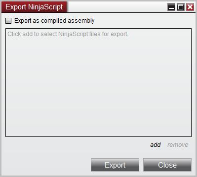

|
<< Click to Display Table of Contents >> Export |


|
Export
|
<< Click to Display Table of Contents >> Export |
|
You can export NinjaScript for others to import in several formats:
•Source files - NinjaScript source files that can be imported and edited by others
•Assemblies - A compiled assembly (DLL) of NinjaScript that "hides" your source code. This can be further protected by SecureTeam's Agile.NET to prevent theft of your intellectual property.
 Exporting NinjaScript as Source Files
Exporting NinjaScript as Source Files
You may want to provide other NinjaTrader users with source files of your NinjaScript in a format where they are able to view and edit them.
1.From the Control Center window select the menu Tools > Export > NinjaScript... to open the "Export NinjaScript" dialog window
2.Press "add"
3.Use the "Type" drop down to filter available NinjaScript types
4.Select all of the files that you want to export and press the "OK" button
5.A list of all files that will be exported will be shown
6.Press the "Export" button to export the selected files
7.A file dialog will open where you can choose the location your zip export file will be created in. Per default the NinjaScript Archive File (.zip) file will be created in My Documents\<NinjaTrader Folder>\bin\Custom\ExportNinjaScript.
8.The file can be imported by another NinjaTrader application on a different PC
|
 |
|
|
||
 Exporting NinjaScript as Assembly
Exporting NinjaScript as Assembly
You may want to provide other NinjaTrader users with access to your proprietary indicators or strategies in a secure format preventing them from being able to see your proprietary source code. You can do this by exporting your NinjaScript indicators as a compiled Microsoft .NET assembly (DLL) file.
•This is a great distribution option if your proprietary indicator or strategy files do not reference external DLL's •If your proprietary indicator or strategy references external DLL's then its advised to create your own custom installer
1.From the Control Center window select the menu Tools > Export > NinjaScript... to open the "Export NinjaScript" dialog window 2.Select the option "Export as compiled assembly". 3.You can optionally select "Protect compiled assembly" (For information on protection see the "Protection/DLL Security page) 4.Press "add" 5.Use the "Type" drop down to filter available NinjaScript types 6.Select all of the files that you want to export and press the "OK" button 7.A list of all files that will be exported will be shown 8.Optionally enter information that describes the assembly in the "Product" and "Version" fields 9.Press the "Export" button to export the selected files 10.A file dialog will open where you can choose the location your zip export file will be created in. Per default the NinjaScript Archive File (.zip) file will be created in My Documents\<NinjaTrader Folder>\bin\Custom\ExportNinjaScript. 11.The file can be imported by another NinjaTrader application on a different PC
|
|
|
|